React란?
• React 는 UI 를 구현하는 JavaScript 라이브러리
- SPA(Single Page Application) 개발에 가장 적합한 라이브러리
- 화면상에 데이터가 변경되는 경우 페이지 전체를 렌더링하는 것이 아니라 필요한 부분만 렌더링 할 수 있다.
- 웹 앱(Web App) 또는 네이티브 앱(Native App)
- 유지보수를 쉽게 , DOM 관리
- 성능최적화 쉽게
- 컴포넌트에 집중
- 대부분 공식 라이브러리가 없음 (높은 자유도)
- 자바스크립트 친화적 es6 기반로 배우기가 쉽다
설치
- Nodejs - https://nodejs.org/ko/
- Node.js는 서버 측에서 자바스크립트를 실행할 수 있게 해주는 런타임 환경
- 원래 자바스크립트는 웹 브라우저 내에서만 동작했지만, , Node.js 덕분에 서버에서도 자바스크립트를 사용할 수 있게 되었죠
- 웹 서버를 구축하거나 API 서버를 만들 때 많이 사용되고, 비동기 I/O 처리에 강해서 대규모 트래픽을 처리하는 애플리케이션을 만드는 데 적합하다
- 리액트 프로젝트를 준비하기 위해 필요한 webpack, babel 등의 도구들을 실행하는데 사용됩니다.
Babel은 최신 자바스크립트 문법을 구형 브라우저나 Node.js 환경에서도 사용할 수 있게 변환해주는 트랜스파일러- Babel을 사용하면 최신 문법을 구형 환경에서도 호환 가능하게 변환할 수 있다.
- Webpack은 자바스크립트 애플리케이션을 위한 모듈 번들러
- 플리케이션에 필요한 다양한 파일들을(자바스크립트, CSS, 이미지 등) 모두 하나의 번들로 묶어서 브라우저가 쉽게 로드할 수 있게 만들어준다.
- npm은 자바스크립트 프로그래밍 언어를 위한 패키지 관리자이다.
- yarn
- https://classic.yarnpkg.com/en/docs/install#windows-stable
- 자바스크립트 패키지를 관리하기 위해서 사용됩니다. - yarn은 npm동작 방식과 비슷하지만 npm의 단점을 보완해 성능과 속도를 개선한 패키지 관리도구이다.
- Node.js 를 설치하면 npm 이 설치되어서 npm 으로 해도 되긴 하지만, yarn을 사용하면 훨씬 빠르다.
- npm VS yarn
- npm은 여러 패키지를 설치할 경우 패키지가 완전히 설치될 때까지 기다렸다가 다른 패키지로 이동한다. 작업이 패키지별로 순차적으로 실행된다는 것이다.
- yarn은 이 작업들을 병렬로 설치하기 때문에 성능과 속도가 향상된다는 장점이 있다.
- VS Code ( 에디터 ) - https://code.visualstudio.com/
- VS Code 확장설치 (부가기능설치)
- - 기본 브라우저는 Chrome 설정해야 한다. 톱니바퀴 → Settings → browser 검색 → 아래로 내려오면 Custom Browser : Chrome 선택 톱니바퀴 → Settings → local 검색 → Extensions(왼쪽) → 아래로 내려오면 Use local IP as host 체크
프로젝트 생성
- Ctrl + backtick(`) - 터미널 열기
- npx create-react-app {프로젝트명}
- npx create-react-app day01 명령으로 프로젝트 생성 시 에러가 뜨면
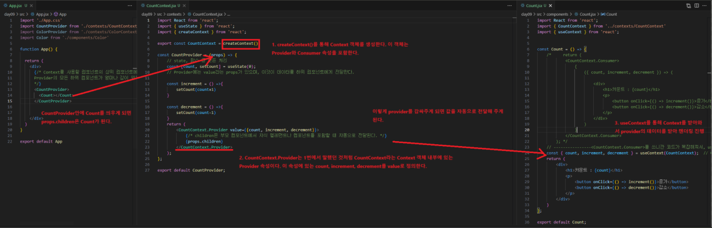
- 첫번째 해결방법
- C:\Program Files\nodejs\node_modules 안의 npm 폴더를 C:\Users\bitcamp\AppData\Roaming\에 복사한다.
- 두 번째 방법
- Node를 제거하고 다시 설치해본다.
- Nodejs 삭제
- 제어판 - 프로그램 삭제
- 아래의 경로를 찾아서 모두 삭제
- C:\Program Files (x86)\Nodejs
- C:\Program Files\Nodejs
- C:\Users\User\AppData\Roaming\npm
- C:\Users\User\AppData\Roaming\npm-cache
- Node를 제거하고 다시 설치해본다.
- 본 주인장은 첫번째 방법으로 해결 -완-
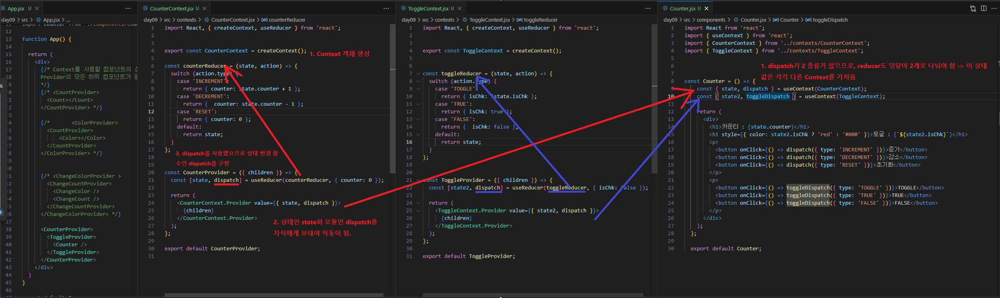
리액트 컴포넌트
- 컴포넌트는 UI를 구성하는 조각(piece)에 해당하며, 독립적으로 분리되어 재사용이 됨을 목적으로 사용된다.
- React 앱에서 컴포넌트는 개별적인 JavaScript 파일로 분리되어 관리한다.
함수형 컴포넌트
- React 컴포넌트는 개념상 JavaScript 함수와 유사하다.
- 컴포넌트 외부로부터 속성(props)을 전달받아 어떻게 UI를 구성해야 할지 설정하여 React 요소 (JSX를 Babel이 변환 처리)로 반환한다.
- Babel : JSX → javascript로 변환 처리
- 이러한 문법 구문을 사용하는 컴포넌트를 React는 '함수형(functional)'으로 분류한다.
컴포넌트 라이프 사이클
- 모든 리액트 컴포넌트에는 라이프사이클(수명 주기)가 존재한다.
- 컴포넌트의 수명은 페이지에 랜더링되기 전인 준비과정에서 시작하여 페이지에서 사라질 때 끝난다.
- 라이프 사이클 메서드의 종류는 총 9가지이다.
- Will 접두사 : 어떤 작업을 작동하기 전에 실행되는 메서드
- Did 접두사 : 어떤 작업을 작동한 후에 실행되는 메서드
- 라이프 사이클은 총 3가지로 나뉜다. (마운트, 업데이트, 언마운트)
- 마운트
- DOM이 생성되고 웹 브라우저상에 나타나는 것을 마운트라고 한다.
- 호출되는 메서드(참고만)
- 컴포넌트 만들기 → constructor → getderivedStateFromProps → render → componentDidMount
- 업데이트
- props가 바뀔 때, state가 바뀔 때, 부모 컴포넌트가 리랜더링될 때, this.forceUdpate로 강제로 렌더링 트리거할 때
- 컴포넌트를 DOM에서 제거하는 것을 언마운트라고 한다,,,.
JSX : JavaScript + XML
- JSX는 리액트에서 사용하는 파일로 JavaScript 코드 안에 HTML과 유사한 코드를 작성할 수 있게 해준다. (HTML과 유사한거지 같은건 아님)
- JSX는 리액트 컴포넌트를 작성하면서 return 문에 사용하는 문법이다.
- 브라우저에서 직접 실행되지 않으며, Babel과 같은 변환기를 통해 Javascript로 변환 후 실행한다.
- JSX가 하는 일은 React 요소(Element)를 만드는 것이다.
- 얼핏 보면 JSX는 JavaScript 문법 확장(JavaScript eXtension) 으로 구문이 HTML과 유사하다.
- 하지만 React 요소는 실제 DOM 요소가 아니라, JavaScript 객체이다.
- 리액트 자체 빌드 도구 덕분에 *.js, *.jsx로 작성해도 아무런 문제 없이 실행은 가능하나 jsx파일로 컴포넌트 만들 것을 권장한다
JSX 규칙
- 태그는 반드시 닫아줘야 한다.
- 최상단에서는 반드시 div로 감싸주어야 한다. ( Fragment 사용, <></> 상황에 따라 )
- JSX안에서 자바스크립트 값을 사용하고 싶을 때는 { }를 사용한다. ⇒ $ { 변수 } X
- 변수값 출력 예시 참고 -> { name }
- 조건부 렌더링을 하고 싶으면 &&연산자나 삼항 연산자를 사용한다.
- 인라인 스타일링은 항상 객체형식으로 작성한다.
- 스타일 작성 시 – 빼고 첫 글자는 대문자로 작성한다.
- 별도의 스타일 파일을 만들었으면 class 대신 className을 사용한다. ( 권장사항 )
- 주석은 {/* */}을 사용해 작성한다
<></> Fragment
- 브라우저 상의 HTML 트리 구조에서 흔적을 남기지 않고 그룹화를 해준다.
- 그룹화를 하는 이유는 실행될 때 JSX에 작성한 내용은 하나의 JavaScript 객체로 변환되는데 하나의 태그로 감싸지지 않으면 변환이 되지 않는다.
Vite
- Frontend 개발을 위해 설계된 빌드도구
- 빠른 개발 환경을 제공하며, React, Vue, Svelte 등 다양한 프레임워크를 지원
- Ctrl + backtick(`) - 터미널 열기
- npm create vite@latest { 프로젝트 명 }
프로젝트 구조
- Javascript 구역과 jsx 구역이 나눠져 있다.
App.js / index.js or main.jsx / index.html
- React Project
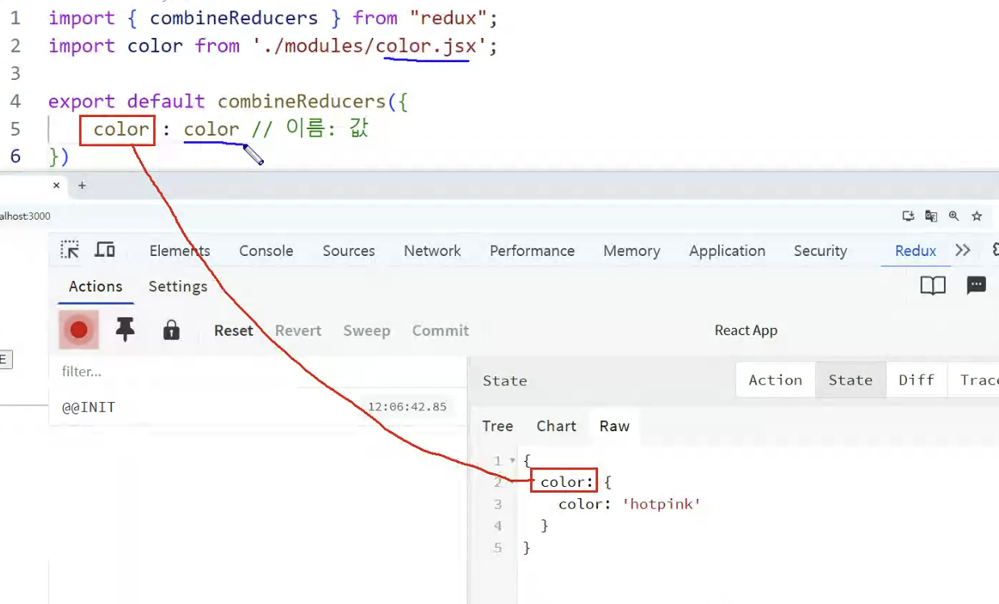
- Vite 프로젝트
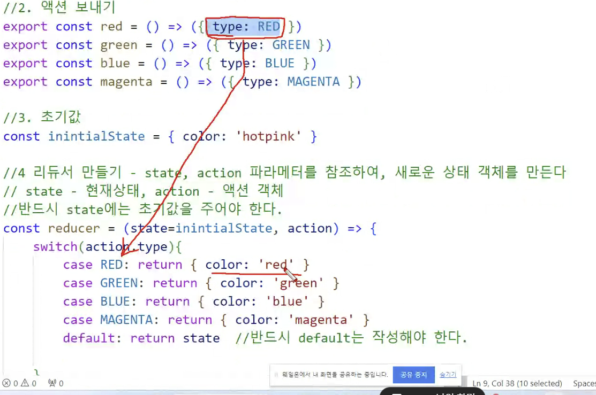
public
index.html → 최종적으로 화면이 띄워지는 것
src (우리가 작업하는 위치)
components
Dog.js
Test01.js
Test02.js
App.js - main 이다
index.js- App.js
- 리액트 애플리케이션의 핵심 컴포넌트
App.js파일은 하나의 컴포넌트로, 다른 하위 컴포넌트들을 포함할 수 있으며, 여기서 UI가 렌더링된다.
- index.js
- 리액트 애플리케이션의 시작점
ReactDOM.render를 사용해App.js와 같은 최상위 컴포넌트를 HTML DOM에 연결하여 브라우저에 UI를 표시
- index.html
- 리액트 애플리케이션이 브라우저에서 실행될 HTML 틀을 제공
index.html은 보통 리액트 프로젝트에서 public 폴더 안에 위치하며, 애플리케이션의 기본 HTML 페이지- 이 파일에는
<div id="root"></div>와 같은 특정 DOM 요소가 포함되어 있으며, 리액트는 이 요소에 애플리케이션을 삽입
리액트 연산자 선호
- 리액트에서는 ES6 방식인 &&, || 연산자를 선호한다.
import React, { useState } from 'react';
const Test04 = () => {
const [visible, isVisible] = useState(false);
const onToggle = () =>{
isVisible(!visible)
}
const onShow = () =>{
isVisible(true)
}
const onHide = () =>{
isVisible(false)
}
return (
<div>
<button onClick={onShow}>보이기</button>
<button onClick={onHide}>숨기기</button>
<button onClick={onToggle}>{visible?'숨기기':'보이기'}</button>
<hr></hr>
{
// 조건 ? 참 : 거짓
visible? <div style={{width:300, height: 100, margin:20, background:'hotpink'}}></div>:null // null 개별로임
}
{
// 조건 ? 참 : 거짓
visible && <div style={{width:300, height: 100, margin:20, background:'cyan'}}></div> // && 선호
}
</div>
);
};
export default Test04;리액트 함수 호출
- 리액트는 순수 자바스크립트가 아니다. 베이스가 자바스크립트일 뿐
- 함수 뒤에 ()를 붙여서 호출하면 새로고침 하자마자 무조건 실행된다.
- 해결방법
- 함수를 한번 묶어준다 → ( ) ⇒ 함수(값)
- 예시
const Test01 = () => { const test1 = () => { alert('test1') } const test2 = () => { alert('test2') } const test3 = (num) => { alert('test3 num : '+num) } const test4 = (num) => { alert(`num = ${num}`) } return ( <div> <h2>이벤트 : on + 첫글자는 대문자</h2> <p> <button onClick={test1(10)}>클릭1</button> // 이렇게 하면 무한으로 함수 호출 <button onClick={test2}>클릭2</button> // 클릭하면 함수 호출 <button onClick={()=>test3(10)}>클릭3</button> // 함수 호출 시 바로 호출하지 않기 위해 래핑(함수로 감쌈) <button onClick={()=>test4(20)}>클릭4</button> // 얘도 마찬가지 </p> </div> ); };
Map으로 JSON 데이터 받기
- map을 순회할 때, 반드시 key라는 속성을 주어야 한다.
- key는 unique해야 하며, 보통 seq나 id로 많이 한다.
- key를 부여하지 않으면 다음과 같은 경고가 발생한다.
💡 Warning: Each child in a list should have a unique "key" prop.
=> 유니크한 키 속성을 넣어줘야 한다.
- 예제
import React from 'react'; const Test02 = () => { const title = '신상명세서'; const arr = ['홍길동', '코난', '둘리', '라이언', '네오']; const data = [ { id: 1, name: '홍길동' }, { id: 2, name: '코난' }, { id: 3, name: '둘리' }, { id: 4, name: '라이언' }, { id: 5, name: '네오' }, ]; return ( <div> <h2>{title}</h2> <ul> { arr.map((item, index) => { /* return <li>{index} : {item}</li> */ //따라서 map을 돌릴때는 반드시 key라는 속성을 주어야 한다. return <li key={index}>{index} : {item}</li> }) } </ul> <h2>{title} : JSON 배열 ver</h2> <ul> { data.map(item=><li key={item.id}>{item.id} : {item.name}</li>) /* 똑같은 결과 */ data.map((item)=>{ return <li key={item.id}>{item.id} : {item.name}</li> }) } </ul> </div> ); }; export default Test02;
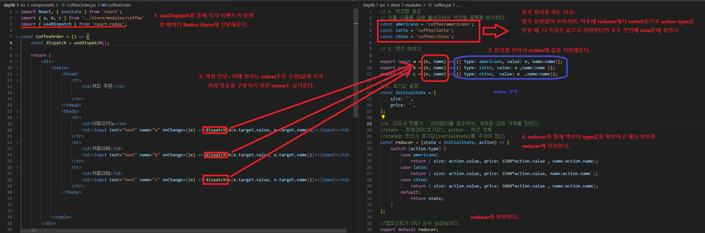
상속 관계
- 자식끼리 데이터 전달 x ⇒ 부모한테 주고 부모가 줘야해 → 하향식 전달법
- Props
- properties의 약자로 부모 컴포넌트에서 자식 컴포넌트로 전달되는 데이터(객체, 배열 등)나 함수이다.
- 컴포넌트 간의 데이터를 전달하기 위해 사용되는 리액트 객체이다.
- 보내는 방법
- import 한 컴포넌트 태그 내에 속성이름=값 형태로 작성하여 전달
- 여러 개의 값 전달할 때는 중괄호 안에 전달받는 속성 이름을 콤마(,)로 구분하여 나열
- 숫자를 보내는 경우 {} 안에 작성
- JavaScript Object로 전달하는 데이터는 {{ }} 중괄호 2개를 사용하여 내부에 이름과 값을 작성한다.
- 받는 방법
- 부모로부터 전달받은 props를 직접 받으려면 { } 안에 속성 이름 작성한다.
- 함수의 매개변수를 props로 작성한 다음 props.속성이름 형태로 값을 사용할 수 있다.
Hook
- Hook은 클래스 컴포넌트를 작성하지 않아도 state와 같은 특징들을 사용할 수 있습니다.
- 기존 클래스 컴포넌트 예시
class MyComponent extends Component { constructor(props) { super(props); // state를 초기화 this.state = { count: 0, }; } ../
- 기존 클래스 컴포넌트 예시
- Hook의 개요
- 함수형 컴포넌트는 렌더링 할 때마다 내부의 것들을 기억하지 못한다.
- 내부의 것들을 유지하기 위해서 hook이 등장했다
useState
- 값이 유동으로 변할 때 사용
- 형식
- const [상태데이터, 상태데이터의 값을 변경해주는 함수] = React.useState(초기값);
- 예시
import React, {useState} from 'react'; const Test03 = () => { const [name, setName] = useState('홍재헌') // useState를 통해 상태 변수 선언 const [age, setAge] = useState(28) // () 안의 값은 default 값 const [color, setColor] = useState('cyan') const onName = () => { setName('홍박사') } const onAge = () => { setAge(30) } const onColor = () =>{ setColor('yellow') } return ( <div> <h2 style={{backgroundColor:color}}>이름 : {name} / 나이 : {age}</h2> <p><button onClick={onName}>이름을 홍박사로 변경</button></p> <p><button onClick={onAge}>나이를 30으로 변경</button></p> <p><button onClick={()=>{setAge(30)}}>나이를 30으로 변경</button></p> <p><button onClick={onColor}>노란색으로 변경</button></p> </div> ); }; export default Test03; - 실행결과
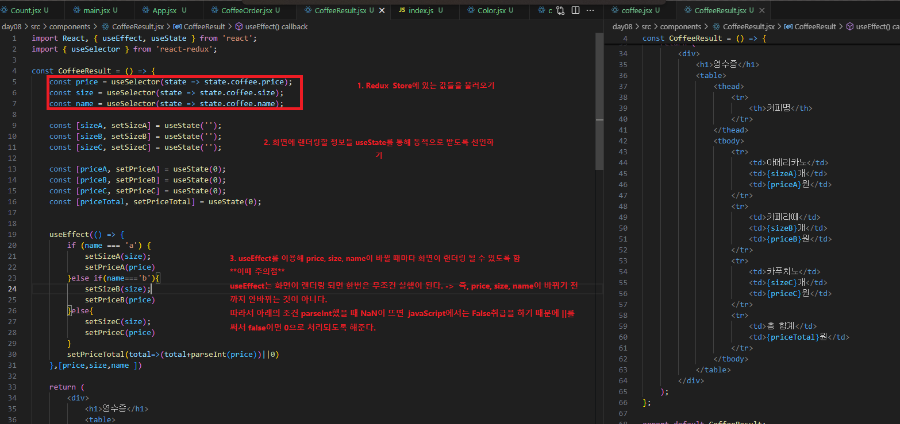
예제 : SungJuk
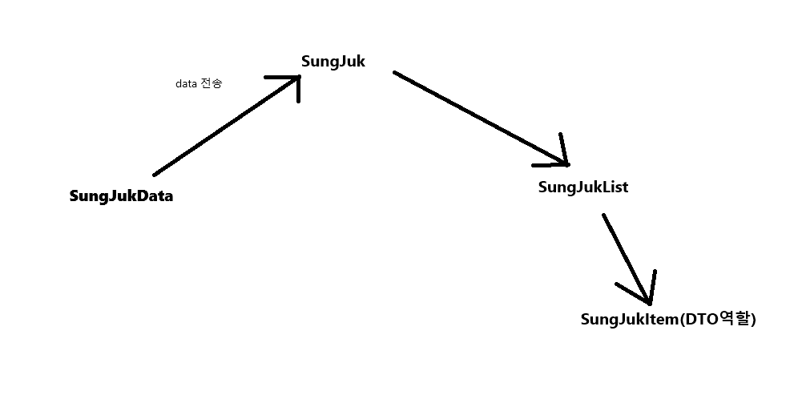
- SungJukData: JSON data들
- SungJuk : 부모 컴포넌트
- SungJukList : 성적 리스트 출력
- SungJukItem: DTO 역할
- App.js
import React from 'react';
import SungJuk from './components/sungJuk/SungJuk';
const App = () => {
return (
<div>
<SungJuk></SungJuk>
</div>
);
};
export default App;- SungJukData
export default [ { seq: 1, name: '홍재헌', kor: 80, eng: 90, math: 100 }, { seq: 2, name: '박채연', kor: 86, eng: 77, math: 66 }, { seq: 3, name: '이수정', kor: 90, eng: 95, math: 85 }, { seq: 4, name: '박지훈', kor: 78, eng: 82, math: 88 }, { seq: 5, name: '최은영', kor: 92, eng: 89, math: 95 } ] - SungJuk
import React, { useState } from 'react';
import sungJukList from './SungJukData'
import SungJukList from './SungJukList';
import '../../css/sungJuk.css'
const SungJuk = () => {
const [list, setList] = useState(sungJukList)
return (
<>
<section>
<div className='sungjukList'>
<h2>성적 리스트</h2>
<SungJukList list={list}></SungJukList>
</div>
</section>
</>
);
};
export default SungJuk;list에 default로SungJukData.jsx에서 가져온 데이터를sungJukList에 저장- 해당 list를
SungJukList.jsx에 보낸다. - SungJukList
import React from 'react'; import SungJukItem from './SungJukItem'; const SungJukList = ({ list }) => { return ( <> <table border="1"> <thead> <tr> <th>번호</th> <th>이름</th> <th>국어</th> <th>영어</th> <th>수학</th> <th>총점</th> <th>평균</th> </tr> </thead> <tbody> { list.map(item => <SungJukItem key={item.seq} item={item} />) } </tbody> </table> </> ); }; export default SungJukList;- list가 Json 배열 형태로 되어 있기 때문에 list 정보를
list.map(item => <SungJukItem key={item.seq} item={item} />)코드로 받아온다. - SungJukItem : DTO를 담당하는 부분이다.
import React from 'react'; const SungJukItem = ({ item }) => { const { seq, name, kor, eng, math } = item; const total = kor + eng + math; const avg = (total / 3).toFixed(2) return ( <tr> <td>{seq}</td> <td>{name}</td> <td>{kor}</td> <td>{eng}</td> <td>{math}</td> <td>{total}</td> <td>{avg}</td> </tr> ); }; export default SungJukItem;
- list가 Json 배열 형태로 되어 있기 때문에 list 정보를
- 실행 결과
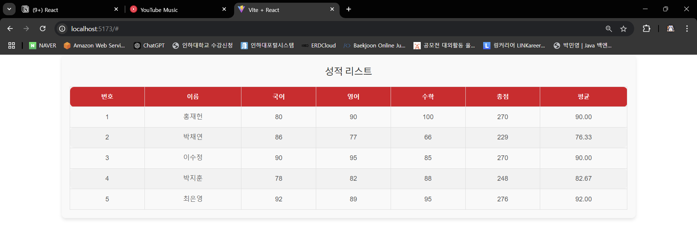
useRef
- 직접 DOM 요소에 접근해야 할 때, useRef Hook을 사용하여 DOM 요소에 직접 접근이 가능하다.
- getElementById, querySelector 같은 DOM Selector 함수를 사용해서 DOM 을 선택한다.
- 리렌더링을 하지 않는다. → 즉, 컴포넌트를 다시 그리는 과정을 하지 않는다는 뜻이다.
- useRef 훅이 반환하는 ref 객체를 이용해서 자식 요소에 접근이 가능하다.
- useRef는 .current 프로퍼티로 전달된 인자로 초기화된 변경 가능한 ref 객체를 반환한다.
- Ref를 사용해야 할 때
- 포커스, 텍스트 선택 영역, 혹은 미디어의 재생을 관리할 때
- 애니메이션을 직접적으로 실행시킬 때
- 서드 파티 DOM 라이브러리를 React와 같이 사용할 때
- 예시
const Todos = () => { const inputRef = useRef(); const onAdd = (e) => { e.preventDefault(); setList(list => [ ...list, { seq: seq.current++, text: text } ]); setText(''); // 입력창 초기화 inputRef.current.focus(); }; return ( <div> <h3>일정 관리</h3> <TodoForm text={text} inputRef={inputRef} onAdd={onAdd} onInput={onInput}></TodoForm> <TodoList list={list} remove={remove}></TodoList> </div> ); }; export default Todos;- 여기서
onAdd()가 실행되면 list에 정보를 넣은 다음에 input에 다시 focus한다.
- 여기서
제어 컴포넌트
- 제어 컴포넌트는 사용자의 입력을 기반으로 자신의 state를 관리하고 업데이트한다.
- React에서는 변경할 수 있는 state가 일반적으로 컴포넌트의 state 속성에 유지되며 setState()에 의해 업데이트���다.
- 대표적으로
onChange={ change함수}처럼 사용자의 입력을 받는 컴포넌트에 event 객체를 이용해setState()로 값을 저장하는 방식을 제어 컴포넌트 방식이다. - 제어 컴포넌트의 값은 항상 최신값을 유지한다. 새로운 입력 값이 생길때 마다 상태를 새롭게 갱신한다. 이는 데이터와 UI에서 입력한 값이 항상 동기화됨을 알 수 있다.
- 언제 사용할까?
- 유효성 검사
- 유효한 데이터가 없는 경우 전송 버튼의 상태를 disabled로 표시하기
- 신용카드와 같은 특정 입력 방식 적용하기
- 예시
export default function App() { const [input, setInput] = useState(""); const onChange = (e) => { setInput(e.target.value); }; return ( <div className="App"> <input onChange={onChange} /> </div> ); }
비제어 컴포넌트
- 비제어 컴포넌트는 기존의 바닐라 자바스크립트와 크게 다르지 않은 방식
- 우리는 바닐라 자바스크립트를 사용할 때 폼을 제출할때 (submit button)을 클릭할 때 요소 내부의 값을 얻어왔다.
export default function App() { const inputRef = useRef(); // ref 사용 const onClick = () => { console.log(inputRef.current.value); }; return ( <div className="App"> <input ref={inputRef} /> <button type="submit" onClick={onClick}> 전송 </button> </div> ); }
- 제어 컴포넌트와 비제어 컴포넌트 비교
| 기능 | 제어 컴포넌트 | 비제어 컴포넌트 |
|---|---|---|
| 일회성 정보 검색 (예: 제출) | O | O |
| 제출 시 값 검증 | O | O |
| 실시간으로 필드값의 유효성 검사 | O | X |
| 조건부로 제출 버튼 비활성화 (disabled) | O | X |
| 실시간으로 입력 형식 적용하기 (숫자만 가능하게 등) | O | X |
| 동적 입력 | O | X |
useRef 실습
import React from 'react';
import { useState, useRef } from 'react';
const Test01 = () => {
const [id, setId] = useState('hong')
const [pwd, setPwd] = useState('111')
const idRef = useRef();
const onIputid = (e) =>{
console.log(e.target);
const {value} = e.target
setId(value)
}
const onIputPwd = (e) =>{
console.log(e.target);
const {value} = e.target
setPwd(value)
}
const onReset = (e) =>{
setId('')
setPwd('')
idRef.current.focus()
}
return (
<div>
아이디 <input type='text' value={id} placeholder='아이디를 입력하세요' onChange={onIputid} ref={idRef}></input><br></br>
비밀번호 <input type='password' value={pwd} placeholder='비밀번호를 입력하세요' onChange={onIputPwd}></input><br></br>
<button disabled={pwd.length<6}>로그인</button>
<button onClick={onReset}>초기화</button>
</div>
);
};
export default Test01;- onChange를 안해주면 텍스트가 고정돼서 입력되지 않는다.
useState('hong'),useState('111')로 default 값을 박아놓고 안바뀜
- 왜 바뀌지 않는 것인가? → 제어 컴포넌트
📄 Modal 예제
- Test03
import React from 'react'; import Test03Modal from './Test03Modal'; import '../css/Test03.css' import { useState } from 'react'; const Test03 = () => { // ** 상태변수와 상태변수를 바꾸는 함수는 같이 있어야 한다. ** const [open, isOpen] = useState(false); // 상태 변수 // 함수의 주소값이 넘어간다. const onOpen = () => {// 상태 변수를 바꾸는 함수 (모달 여는 역할) isOpen(true) } const onClose = () => {// 상태 변수를 바꾸는 함수 (모달 여는 역할) isOpen(false) } return ( <div> <button className='button' onClick={onOpen}>팝업창</button> { open && <Test03Modal onClose={onClose}></Test03Modal> } </div> ); }; export default Test03;- ⭐ 상태변수와 상태변수를 바꾸는 함수는 같이 있어야 한다.
- 팝업 창 버튼을 누르면
open이true가 되면서 모달창이 열린다. 이때, 모달을 닫기 위한 상태도 모달을 열 때 필요하기 때문에onClose 상태 변환 함수도 들고 간다.
- Test03Modal
import React from 'react'; const Test03Modal = ({onClose}) => { return ( <> <div className='bg'></div> <div className='popup'> <p className='closex' onClick={onClose} >x</p> <h2>Have a nice day!!</h2> </div> </> ); }; export default Test03Modal;- closex를 누르면 앞의 부모 컴포넌트인
Test03의 상태 변수open이 false가 되면서{ open && <Test03Modal onClose={onClose}></Test03Modal> }- 이 부분이 유효하지 않게 된다.
- closex를 누르면 앞의 부모 컴포넌트인
📄 Test04(상속 관계에서 상태 변수와 함수 넘기기)
- Test04
import React from 'react'; import { useState } from 'react'; import Display from './Display'; import Animal from './Animal'; const Test04 = () => { const [name, setName] = useState('호랑이') const changeName = (e) =>{ const {value} = e.target; setName(value) } return ( <div> <Animal name={name} changeName={changeName}></Animal> <Display val={name}></Display> </div> ); }; export default Test04;
- Test07Input
import React from 'react';
const Test07Input = ({dto, onInput, addCount}) => {
return (
<div>
<p>이름 입력</p>
<input type='text' name='name' value={dto.name} onChange={onInput}></input>
<p>나이 입력</p>
<input type='text' name='age' value={dto.age} onChange={onInput}></input>
<p>주소 입력</p>
<input type='text' name='addr' value={dto.addr} onChange={onInput}></input>
<p>핸드폰 번호 입력</p>
<input type='text' name='phoneNum' value={dto.phoneNum} onChange={onInput}></input>
<button onClick={addCount}>다음</button>
</div>
);
};
export default Test07Input;- dto에 값을 입력(부모 컴포넌트인 Test07의 상태 변화 함수 onInput 받아서)하고, addCount를 받아서 상태를 Test07의 상태를 변화시킨다.
- Test07Main
import React from 'react';
import Test07Input from './Test07Input';
import { useState } from 'react';
import Test07Print from './Test07Print';
import Test07Output from './Test07Output';
import '../css/Test07.css'
const Test07Main = () => {
const [dto, setDTO] = useState(
{
name:'',
age:'',
addr:'',
phoneNum:''
}
)
const onInput = (e) =>{
const {name, value} = e.target;
setDTO({
...dto, // 값을 복사해서 나머지 값은 유지하돼. 하나만 바꿈
[name]:value
});
}
const [count, setCount] = useState(1);
const addCount = () =>{
setCount(count+1)
}
const minusCount = () =>{
setCount(count-1)
}
return (
<div>
{ // 첫페이지
count===1&&<Test07Input dto={dto} onInput={onInput} addCount={addCount}></Test07Input>
}
{ // 2페이지
count===2&&<Test07Print dto={dto} addCount={addCount} minusCount={minusCount}></Test07Print>
}
{ // 3페이지
count===3&&<Test07Output dto={dto} minusCount={minusCount}></Test07Output>
}
</div>
);
};
export default Test07Main;- 다음을 살펴보자
const onInput = (e) =>{ const {name, value} = e.target; setDTO({ ...dto, // 값을 복사해서 나머지 값은 유지하돼. 하나만 바꿈 [name]:value }); }- 사용자가 입력한 값을 상태 관리 객체인
dto에 실시간으로 업데이트하는 역할을 한다 e.target을 통해 이벤트 객체에서name과value추출e.target는 이벤트가 발생한 HTML 요소를 가리킨다.name은 해당<input>요소의name속성 값을 가져오고, value도 마찬가지로 사용자가 입력한 값을 가져온다.
setDTO함수로 상태 업데이트- React의
useState훅을 사용하여dto상태를 업데이트하는 함수이다 - 스프레드 연산자 (
...dto)로 모든 기존 값을 그대로 복사하여 새로운 객체에 복사하는데, 새로운 객체는 이전의dto를 복사한 것이므로, 기존의 값들을 유지하면서 필요한 값만 업데이트할 수 있다.
- React의
- 동적으로 필드 업데이트 (
[name]: value)- 여기서 중요한 부분은 대괄호 표기법을 사용해 객체의 필드를 동적으로 업데이트한다는 점
- ES6에서 도입된 "계산된 속성명" (Computed Property Names)이라는 문법
name변수에는 해당 입력 필드의name속성 값이 들어 있으므로, 이 구문은dto객체의 특정 필드 (예:name,age,addr,phoneNum)에value값을 동적으로 할당
- 여기서 중요한 부분은 대괄호 표기법을 사용해 객체의 필드를 동적으로 업데이트한다는 점
- 사용자가 입력한 값을 상태 관리 객체인
- Test07Print
import React from 'react';
const Test07Print = ({dto, addCount, minusCount}) => {
return (
<div>
<p>이름 : {dto.name}</p>
<p>나이 : {dto.age}</p>
<p>주소 : {dto.addr}</p>
<p>핸드폰 번호 : {dto.phoneNum}</p>
<button onClick={minusCount}>뒤로</button>
<button onClick={addCount}>다음</button>
</div>
);
};
export default Test07Print;useEffect
- useEffect는 렌더링, 혹은 변수의 값 혹은 오브젝트가 달라지게 되면, 그것을 인지하고 업데이트를 해주는 함수
- useEffect는 콜백 함수를 부르게 되며, 렌더링 혹은 값, 오브젝트의 변경에 따라 어떠한 함수 혹은 여러 개의 함수들을 동작시킬 수 있다.
- 렌더링 후 useEffect는 무조건 한번은 실행된다.
- 컴포넌트가 나타날 때 딱 1번만 함수가 호출
useEffect( () => { }, [ ]); - 특정 props가 바뀔 때마다 함수가 호출
useEffect( () => { }, [ props ]);
- useEffect 라는 Hook을 사용하여 할 수 있는 3가지 동작
- 컴포넌트가 마운트 됐을 때 (처음 나타났을 때)
- 언 마운트 됐을 때 (사라질 때)
- 업데이트될 때 (특정 props가 바뀔 때)
useMemo (리랜더링, 최적화)
- 컴포넌트의 성능을 최적화시킬 수 있는 대표적인 react hooks 중 하나
- return을 해줘야 한다.
- useMemo에서 Memo는 Memoization을 뜻한다
- memoization?
- 기존에 수행한 연산의 결괏값을 어딘가에 저장해 두고 동일한 입력이 들어오면 재활용하는 프로그래밍 기법을 말한다
- memoization?
- 예시 코드
import React, { useMemo, useState } from 'react'; const Test03 = () => { const [count, setCount] = useState(0); // count은 증가하지만, 결과는 바뀌지 않는다. /* const isEven = () =>{ return count%2===0; } */ // 사용자 함수를 만들어서 return 할 경우 return 값을 기억하기 때문에 결과가 '짝수', '홀수'가 나온다. const isEven = useMemo(()=>{ return count%2===0; }, [count]) return ( <div> <h2>카운트 : {count}</h2> <button onClick={() => setCount(count + 1)}>증가</button> <h2>결과 : {isEven ? '짝수' : '홀수'}</h2> </div> ); }; export default Test03;- useMemo를 사용해야 return 값을 기억해야 결과가 바뀜.
useReducer()
- React에서 컴포넌트의 상태 관리를 위해서 useState를 사용해서 상태를 업데이트를 하는데, useReducer 를 사용하게 되면 컴포넌트와 상태 업데이트 로직을 분리하여 컴포넌트 외부에서도 상태 관리를 할 수 있다.
- 즉, 현재 컴포넌트가 아닌 다른 곳에 state를 저장하고 싶을 때 유용하게 사용할 수 있다.
- 트리 구조일 때, 타고타고 들어갈 필요가 읍다.
- 언제 useReducer를 사용할까?
- 상태 관리가 복잡하거나 여러 단계로 상태가 변경될 때.
- 여러 액션이 상태를 변경하며,
switch구문을 통해 관리하기 적합할 때 useState로 관리하기에 코드가 지저분해질 때
- 사용법
- const [state, dispatch] = useReducer(reducer, initialState);
- state : 현재 상태를 나타냄
- dispatch : 특정 액션을 발생시켜 상태를 업데이트할 때 사용
- reducer : state와 action를 받아 새로운 state를 반환하는 함수
- initialState : 초기 상태 값
- const [state, dispatch] = useReducer(reducer, initialState);
useReducer 실습
📄 Test03
import React, { useReducer } from 'react';
const initialState = { color: 'PINK' }
const reducer = (state, action) => {
switch (action.type) {
case 'CHANGE_COLOR': return {color: action.text}
case 'RESET': return initialState
default: return state
}
}
const Test03 = () => {
const [state, dispatch] = useReducer(reducer, initialState);
return (
<div>
<h1 style={{ color: state.color }}>색 : {state.color}</h1>
<p>
<button onClick={() => dispatch({ type: 'CHANGE_COLOR', text: 'RED' })}>빨강</button>
<button onClick={() => dispatch({ type: 'CHANGE_COLOR', text: 'GREEN' })}>초록</button>
<button onClick={() => dispatch({ type: 'CHANGE_COLOR', text: 'BLUE' })}>파랑</button>
<button onClick={() => dispatch({ type: 'CHANGE_COLOR', text: 'PURPLE' })}>보라</button>
<button onClick={() => dispatch({ type: 'RESET' })}>초기화</button>
</p>
</div>
);
};
export default Test03;📄 Test 04
import React, { useEffect, useReducer } from 'react';
import axios from 'axios'
const initialState = {
dto: {},
error: null,
loading: true
};
const reducer = (state, action) => {
switch (action.type) {
case 'SUCCESS':
return {
dto: action.payload,
error: null,
loading: false
}
case 'ERROR':
return {
dto: {},
error: '404에러, 데이터를 가져오지 못했습니다.',
loading: false
}
default: return state;
}
}
const Test04 = () => {
const [state, dispatch] = useReducer(reducer, initialState)
useEffect(() => {
const url = 'https://jsonplaceholder.typicode.com/posts/3'; // 'https://jsonplaceholder.typicode.com/pots/3'; => 404에러
axios.get(url)
.then(res => dispatch({ type: 'SUCCESS', payload: res.data })) // 성공했을 때
.catch(error => dispatch({ type: 'ERROR' })) // 실패했을 때
}, [])
return (
<div>
<h2>
{
state.dto && state.loading ? '로딩 중' : state.dto.title
}// state.dto가 참이면 뒤에를 실행 => 뒤에를 봤는데 3항연산자네, 그러면 그거를 판단
</h2>
<p>
{
state.error ? state.error : null
}
</p>
</div>
);
};
export default Test04;- 화면 보면 처음에
로딩중으로 떳다가 title 정보가 나온다. 이유를 살펴보자 initialState에서loading: true이다. 따라서 처음 페이지가 나오면 로딩 중이라고 뜬다.- 하지만 이후
useEffect()에서axios.get(url)반환되면 →dispatch →useReducer가 호출되어 loading이 false가 되면state.dto && state.loading ? '로딩 중' : state.dto.title여기서 title이 호출된다.
- Success
- Error
📄 Test05
import React, { useEffect, useReducer, useState } from 'react';
import axios from 'axios'
const initialState = {
dto: {},
error: null,
loading: true
};
const reducer = (state, action) => {
switch (action.type) {
case 'SUCCESS':
return {
dto: action.payload,
error: null,
loading: false
}
case 'ERROR':
return {
dto: {},
error: '404에러, 데이터를 가져오지 못했습니다.',
loading: false
}
default: return state;
}
}
const Test05 = () => {
const [id, setId] = useState('')
const [state, dispatch] = useReducer(reducer, initialState)
const url = 'https://jsonplaceholder.typicode.com/photos/';
const onSearch = (id) =>{
const api = url+id;
axios.get(api).then(res=> dispatch({type: 'SUCCESS', payload: res.data}))
.catch(error => dispatch({ type: 'ERROR' }))
}
return (
<div>
<h3>
ID 입력 (1~5000) : <input type='text' value={id} onChange={ e=> setId(e.target.value)}/>
<button onClick={()=> onSearch(id)}>검색</button>
</h3><br></br>
<h2>
{
state.dto && state.loading ? '로딩 중' : state.dto.title
}<br></br>
{
state.loading || <img src={state.dto.url} alt="gd"></img>
}
</h2>
<p>
{
state.error ? state.error : null
}
</p>
</div>
);
};
export default Test05;- 초기화면
- 20번 탐색
useState vs useEffect vs useMemo
| 훅 | 주요 역할 | 주요 사용 사례 | 의존성 배열 | 특징 및 장점 |
|---|---|---|---|---|
| useState | 상태 값 관리 | 카운터, 폼 데이터 등 값이 변경될 때 다시 렌더링 | 없음 | 간단한 상태 관리를 위한 기본 훅, 상태 변경 시 컴포넌트 재렌더링 |
| useEffect | 부수 효과(side effects) 관리 | 데이터 fetch, DOM 조작, 외부 이벤트 처리 | 있음 (변경 시 실행) | 생명주기 이벤트를 관리, 외부와의 상호작용 시 사용 |
| useMemo | 계산 결과 메모이제이션 (캐싱) | 반복적이고 비용이 큰 계산 작업 최적화 (ex. 리스트 필터링, 정렬 등) | 있음 (의존성 값이 변경될 때 재계산) | 값이 변할 때만 재계산하여 성능 최적화, 불필요한 연산 방지 |
| useReducer | 복잡한 상태 로직 관리 및 여러 상태 업데이트 | 여러 상태의 복합 로직을 처리해야 할 때 | 없음 | 상태 로직을 분리하고 명확하게 정의, 복잡한 상태 관리에 적합 |
image 띄우기
- 최종적으로 띄워지는 화면은 public 디렉토리 안에 index.html이다. 따라서 다음과 같은 경로로 이미지를 띄워야 한다.
- 이렇게 해도 됨
export default [ { id: 1, img: './image/dog1.jpg', title: 'Shepherd' }, { id: 2, img: './image/dog2.jpg', title: 'Retriever' }, { id: 3, img: './image/dog3.jpg', title: 'Sheepdog' }, { id: 4, img: './image/dog4.jpg', title: 'Husky' }, { id: 5, img: './image/dog5.jpg', title: 'Bulldog' }, { id: 6, img: './image/dog6.jpg', title: 'Shih Tzu' }, { id: 7, img: './image/dog7.jpg', title: 'Poodle' }, { id: 8, img: './image/dog8.jpg', title: 'Maltese' } ];
- 이렇게 해도 됨
- public에 있는 이미지 폴더는 index.html를 기준으로부터 상대경로를 지정해야 한다.
- index.html 안의 <div id="root"></div> 이곳으로 렌더링 되기 때문이다.
- 단 ./ 를 생략해서는 안 된다.
- src 안에 있는 이미지 파일 처리는 참조변수를 사용한다.
import React from 'react'; import img01 from '../image/dog1.jpg'; import img02 from '../image/dog2.jpg'; import img03 from '../image/dog3.jpg'; import img04 from '../image/dog4.jpg'; const Test09 = () => { const css = { width:'200px', height:'200px' } return ( <div> <img src={img01} alt='개1' style={css}></img> <img src={img02} alt='개2' style={css}></img> <img src={img03} alt='개3' style={css}></img> <img src={img04} alt='개4' style={css}></img> </div> ); }; export default Test09; /* => src 안에 있는 이미지 파일 처리는 참조 변수를 사용한다 [형식] import 참조변수 from '이미지 경로' */
image 띄우기 실습
📄 Test08
- Test08Data.jsx
export default [ { id: 1, img: './image/dog1.jpg', title: 'Shepherd' }, { id: 2, img: './image/dog2.jpg', title: 'Retriever' }, { id: 3, img: './image/dog3.jpg', title: 'Sheepdog' }, { id: 4, img: './image/dog4.jpg', title: 'Husky' }, { id: 5, img: './image/dog5.jpg', title: 'Bulldog' }, { id: 6, img: './image/dog6.jpg', title: 'Shih Tzu' }, { id: 7, img: './image/dog7.jpg', title: 'Poodle' }, { id: 8, img: './image/dog8.jpg', title: 'Maltese' } ]; - Test08Gallery
import React, { useState } from 'react'; import dataList from './Test08Data'; import '../css/Test08.css' import Test08View from './Test08View'; const Test08Gallery = () => { const [list, setList] = useState(dataList); const [one, setOne] = useState(list[1]); const onView = (e)=>{ console.log(e.target); const {src, alt} = e.target; setOne({ img:src, title:alt }) } return ( <div className='wrap2'> <Test08View list={list} one={one} onView={onView}></Test08View> </div> ); }; export default Test08Gallery;- 앞의
Test08Data의 data를dataList라는 변수에 담은 다음에 상태 변수에 정의 - one은 가장 위에 있는 사진임. 임의로 1번 인덱스의 사진을 default로 놓음
onView함수는 one을 바꿔주는 함수.e.target은<img src={img} alt={title}/>이므로 src 속성과 alt 속성을 뽑아서 setOne을 통해 상태변화 함수로 값을 변경해준다.
- 앞의
- Test08List
import React from 'react'; import Test08Item from './Test08Item'; const Test08List = ({list, onView}) => { return ( <ul className='list'> { list.map(item=><Test08Item item={item} key={item.id} onView={onView}></Test08Item>) } </ul> ); }; export default Test08List;- map을 통해 item을 순회해주고, onView는 Test08Item에게 그냥 넘겨준다.
- Test08Item
import React, { useState } from 'react'; const Test08Item = ({ item, onView }) => { const { id, img, title } = item; return ( <div> <li onClick={onView}> <img src={img} alt={title}/> </li> </div> ); }; export default Test08Item;- 클릭할 때마다 해당 리스트의 요소 정보를 onView에 넘긴다.
- Test08Big
import React from 'react'; const Test08Big = ({one}) => { const {id, img, title} = one; return ( <div className='bigimg'> <h2>{title}</h2> <img src={img} alt={title}></img> </div> ); }; export default Test08Big;- 과정을 생략하긴 했지만, 위에서 onView로 src와 alt 값을 넘기면
setOne함수를 통해 one의 정보를 변경해주고,one={one}을 통해 해당 값을 여기 Test08Big에 넘긴다 - 이후 Test08Big.jsx에서 해당 값을 랜더링한다.
- 이렇게 되면 결국 밑에서 클릭한 사진과 정보들이 위에 one요소와 동기화된다.
- 과정을 생략하긴 했지만, 위에서 onView로 src와 alt 값을 넘기면
- 실행 결과
- src 안에 이미지 파일 처리는 참조 변수를 사용한다.
- 형식
- import 참조변수 from '이미지 경로’
import React from 'react';
import img01 from '../image/dog1.jpg';
import img02 from '../image/dog2.jpg';
import img03 from '../image/dog3.jpg';
import img04 from '../image/dog4.jpg';
const Test09 = () => {
const css = {
width:'200px',
height:'200px'
}
return (
<div>
<img src={img01} alt='개1' style={css}></img>
<img src={img02} alt='개2' style={css}></img>
<img src={img03} alt='개3' style={css}></img>
<img src={img04} alt='개4' style={css}></img>
</div>
);
};
export default Test09;
- 실행 결과
리스트 관리
- useState, useRef 훅을 사용하여 리스트에 지속적으로 자료를 저장함
리스트 관리 예제
📄 Test10
import React, { useState, useRef } from 'react';
const Test10 = () => {
const nameRef = useRef(); // 포커스용
const seq = useRef(1); // 1, 2, 3, 4,... // 시퀀스 부여
const [dto, setDTO] = useState({
name: '',
age: '',
});
const { name, age } = dto;
const [list, setList] = useState([]); // 여러 결과를 담을 리스트 설
const onInput = (e) => {
const { name, value } = e.target;
setDTO({
...dto, // 이전 값은 유지하고 새로운 값만 업데이트
[name]: value
});
};
const onAdd = (e) => {
e.preventDefault(); // 기본 동작 방지
if (!name || !age) return;
setList([
...list,
{
idx: seq.current++, // seq는 현재 숫자 증가
name, // key-value 형태로 생략 가능
age
}
]);
// 입력 필드 초기화
setDTO({
age: '',
name: ''
});
nameRef.current.focus();
};
return (
<div>
<form onSubmit={onAdd}>
이름 : <input type='text' name='name' value={name} onChange={onInput} ref={nameRef}></input><br></br>
나이 : <input type='text' name='age' value={age} onChange={onInput}></input><br></br>
<button type='submit'>추가</button>
</form><hr></hr>
<ul>
{
list.map((item) => (
<li key={item.idx}>
{item.idx} / {item.name} / {item.age}
</li>
))
}
</ul>
</div>
);
};
export default Test10;
- nameRef : 입력하면 focus 용
- const seq = useRef(1);
- onInput 함수
const onInput = (e) => { const { name, value } = e.target; console.log(e.target); setDTO({ ...dto, // 이전 값은 유지하고 새로운 값만 업데이트 [name]: value }); };- setDTO를 할 때 이전 값을 저장하는 이유(
...dto를 해주는 이유)- name을 입력할 땐, age 정보가 저장되어야 하고, age 정보를 입력할 땐 name의 정보가 저장되어야 하기 때문이다.
- setDTO를 할 때 이전 값을 저장하는 이유(
- onAdd 함수
const onAdd = (e) => { e.preventDefault(); // 기본 동작 방지 if (!name || !age) return; setList([ ...list, { idx: seq.current++, // seq는 현재 숫자 증가 name, // key-value 형태로 생략 가능 age } ]); // 입력 필드 초기화 setDTO({ age: '', name: '' }); nameRef.current.focus(); };- 입력 필드 초기화는 필수로 잘해줘야 한다.
- 실행 결과
📄 Test11
import React, { useState } from 'react';
const dataList = [
{ id: 1, name: 'chk1', text: '연령(만 14세 이상) 확인 (필수)', isChk: false },
{ id: 2, name: 'chk2', text: '개인정보 위탁 처리 동의(필수)', isChk: false },
{ id: 3, name: 'chk3', text: '개인정보 수집 및 이용에 대한 동의(필수)', isChk: false },
{ id: 4, name: 'chk4', text: '이벤트 우대 혜택 동의 안내(선택)', isChk: false },
]
const Test11 = () => {
const [list, setList] = useState(dataList);
const onChk = (e) => {
const { name, checked } = e.target;
if (name === 'all') {
setList(list.map(item => {
return {
...item,
isChk: checked
}
}))
}
else {
setList(list.map(item =>
item.name === name ? {
...item, isChk: checked
} : item
))
}
}
return (
<div>
<input type='checkbox' name='all' onChange={onChk} /* checked={list.filter(item=>item.isChk!==true).length<1} */
checked={list.filter(item=>!item.isChk).length<1}></input> {/* filter문의 역할 전체 선택에서 하나라도 빠지면 false */}
<label>약관동의</label><hr></hr>
{
list.map(item => <p key={item.id}>
<input type='checkbox' name={item.name} checked={item.isChk} onChange={onChk}></input>
<label>{item.text}</label>
</p>)
}
</div>
);
};
export default Test11;웹 스토리지(브라우저 저장소)
- HTML5에서 추가된 기술로 로컬스토리지와 세션스토리지로 구분된다.
- 웹 스토리지는 Key와 Value 형태로 이루어졌다.
- 웹 스토리지는 클라이언트에 대한 정보를 저장한다.
- 웹 스토리지는 로컬에만 정보를 저장하고 쿠키는 서버와 로컬에 정보를 저장한다.
- 종류
- 로컬스토리지 (localStorage) : 클라이언트에 대한 정보를 영구적으로 저장
- 사용자가 브라우저를 닫거나 시스템을 재부팅해도 데이터가 지워지지 않으며, 사용자가 명시적으로 삭제하지 않는 한 계속 유지된다.
// 데이터 저장 localStorage.setItem('key', 'value'); // 데이터 불러오기 const value = localStorage.getItem('key'); // 데이터 삭제 localStorage.removeItem('key');
- 사용자가 브라우저를 닫거나 시스템을 재부팅해도 데이터가 지워지지 않으며, 사용자가 명시적으로 삭제하지 않는 한 계속 유지된다.
- 세션스토리지 (sessionStorage) : 세션 종료 시(브라우저 닫을 경우) 클라이언트에 대한 정보 삭제
// 데이터 저장 sessionStorage.setItem('key', 'value'); // 데이터 불러오기 const value = sessionStorage.getItem('key'); // 데이터 삭제 sessionStorage.removeItem('key');
- 로컬스토리지 (localStorage) : 클라이언트에 대한 정보를 영구적으로 저장
- 장점
- 서버에 불필요하게 데이터를 저장하지 않는다. (백엔드에 절대로 전송되지 않는다.)
- 저장 가능한 데이터의 용량이 크다. (약 5Mb, 브라우저마다 차이 존재)
- 단점
- HTML5를 지원하지 않는 브라우저의 경우 사용 불가. (현재는 거의 없다고 봐야 한다.
- 쿠키와의 차이점
- 쿠키도 클라이언트 측 저장소로 자주 사용되지만, 브라우저 저장소와는 몇 가지 차이가 있다.
- 용량
- 쿠키는 약 4KB 정도의 데이터만 저장할 수 있는 반면, 로컬 및 세션 스토리지는 수 MB까지 데이터를 저장할 수 있다.
- 서버 전송
- 쿠키는 매번 서버로 요청할 때마다 자동으로 전송되지만, 로컬/세션 스토리지의 데이터는 클라이언트 측에서만 유지되므로 서버에 불필요하게 전송되지 않는다.
- 만료
- 쿠키는 수명을 설정할 수 있지만, 로컬 스토리지는 삭제되지 않는 한 영구적으로 유지되고 세션 스토리지는 브라우저 세션이 종료될 때 삭제된다.
- 용량
- 쿠키도 클라이언트 측 저장소로 자주 사용되지만, 브라우저 저장소와는 몇 가지 차이가 있다.
비동기 작업의 이해
- 서버의 API를 사용해야 할 때는 네트워크 송수신 과정에서 시간이 걸리기 때문에 작업이 즉시 처리되는 것이 아니라, 응답을 받을 때까지 기다렸다가 전달받은 응답 데이터를 처리한다. → 이 과정을 효율적으로 처리하기 위해 비동기적으로 처리한다.
- 콜백 함수
- 다른 함수에 인수로 전달되어 특정 작업이 완료된 후 호출되는 함수
- 예제
function greet(name, callback) { console.log(`Hello, ${name}`); callback(); } function sayGoodbye() { console.log("Goodbye!"); } greet("Alice", sayGoodbye);greet함수는name과callback을 인수로 받는다.greet함수는Hello, Alice를 출력한 후sayGoodbye콜백 함수를 호출하여Goodbye!를 출력한다.콜백 헬이라는 단점이 존재한다.- 콜백 함수가 중첩되어 비동기 작업이 여러 단계로 이어지는 경우, 코드의 구조가 점점 깊어지고 복잡해진다.
- 중첩된 콜백을 흔히 콜백 헬이라고 부르며, 코드 가독성을 크게 떨어뜨린다.
doSomething((result) => { doSomethingElse(result, (newResult) => { doThirdThing(newResult, (finalResult) => { console.log("Final result:", finalResult); }); }); });
- Promise의 등장
Promise를 사용하면 비동기 작업이 연속적으로 이어져도 코드가 중첩되지 않고 평평하게 펼쳐진다.- 예시
doSomething() .then((result) => doSomethingElse(result)) .then((newResult) => doThirdThing(newResult)) .then((finalResult) => console.log("Final result:", finalResult)) .catch((error) => console.error("Error:", error));
- 예시
Promise는.then()메서드를 통해 결과를 순차적으로 전달할 수 있어, 콜백 헬 문제를 해결해준다. → 이것을 체이닝이라고 한다.Promise는 비동기 작업의 상태를 관리할 수 있습니다(pending,fulfilled,rejected).function fetchData() { return new Promise((resolve, reject) => { setTimeout(() => { const success = true; if (success) { resolve({ name: "Alice" }); } else { reject("Failed to fetch data"); } }, 2000); }); } fetchData() .then((data) => { console.log("Data received:", data); }) .catch((error) => { console.error("Error:", error); });
- async/await를 통해 Promise 문법 간소화
try-catch와 결합해 에러 처리가 간단해짐async키워드를 함수 앞에 붙이면 해당 함수는 자동으로Promise를 반환await키워드는Promise가 해결될 때까지 기다린 후 그 결과를 반환
비동기 통신 - axios
- 서버에 새로고침 없이 요청할 수 있게 도와준다.
- 서버로 네트워크 요청을 보내고 응답을 받을 수 있도록 도와준다
- 동기 vs 비동기
- 동기 → 요청을 하면 반드시 응답이 와야 함(채팅 프로그램, 이메일)
- 비동기 → 요청을 보내도 응답이 올 때까지 기다리지 않음
- 비동기 통신 종류
- jQuery - $.ajax()
- js - fetch() fetch() -> json 형식으로 가져온다.
- 설치 - axios axios.get() -> object 형식으로 가져온다.
- 설치 방법
- npm install axios
- 사용방법
fetch함수 사용 (기본 패턴)useEffect(() => { fetch('https://jsonplaceholder.typicode.com/posts') // 이 주소에서 데이터를 가져옴 .then(res => res.json()) // JSON 형식으로 변환 .then(res => setList(res)) // 변환된 데이터를 list에 저장 }, []);- API 호출
- JSON 형식으로 변환
- 변환된 데이터를
list에 저장
axios사용 (기본 패턴)useEffect(() => { axios.get('https://jsonplaceholder.typicode.com/posts') // axios로 GET 요청 .then(res => setList(res.data)) // 응답 객체의 data를 list에 저장 }, []);- API 호출 (
axios.get) - 응답 데이터(
res.data)를 추출 - 데이터를
list에 저장
- API 호출 (
fetch함수 사용 (async/await 패턴)useEffect(() => { const getData = async () => { const res = await fetch('https://jsonplaceholder.typicode.com/posts') // fetch를 await로 처리 const data = await res.json() // JSON 형식으로 변환 setList(data) // 데이터를 list에 저장 } getData(); // 비동기 함수 호출 }, []);async/await구문을 사용한fetch비동기 호출 패턴async키워드는 함수 앞에 붙여서 해당 함수를 비동기 함수로 만들어준다.- 비동기 함수는 호출 즉시 작업을 시작하지만,
await가 붙은 부분에서 작업이 완료될 때까지 기다렸다가 다음 작업을 수행
- 비동기 함수는 호출 즉시 작업을 시작하지만,
await를 통해fetch와res.json()이 순서대로 완료될 때까지 기다렸다가, 최종적으로setList(data)가 호출된다.
axios사용 (async/await 패턴)useEffect(() => { const getData = async () => { const res = await axios('https://jsonplaceholder.typicode.com/posts') // axios를 await로 처리 setList(res.data) // 데이터를 list에 저장 } getData(); // 비동기 함수 호출 }, []);axios호출을await로 처리- 응답 데이터를
res.data로 추출 - 데이터를
list에 저장
- 실행 결과
굳이 비동기적으로 처리하는 이유
- 예를 들어, 서버에서 데이터를 불러오는 동안 앱이 멈추지 않고 계속해서 스크롤이나 다른 버튼 클릭을 처리할 수 있는 상황
- 작업이 병렬로 처리되도록 허용
- 자원 효율적 사용
- 동기 코드에서는 네트워크 요청이나 데이터베이스 작업처럼 시간이 걸리는 작업이 완료될 때까지 CPU가 아무것도 하지 않고 대기하는 상황이 발생 → 자원 낭
- 대기 시간이 긴 작업의 효율적 처리
- 네트워크 요청이나 파일 시스템 접근처럼 대기 시간이 긴 작업은 비동기적으로 처리함으로써, 다른 로직을 차질 없이 수행할 수 있다.
React-Router
- 리액트는 SPA (Single Page Application) 방식이다
- 일반적으로 클라이언트가 요청을 하면 서버에서 요청한 페이지를 보여준다. 그러면서 로딩되는 모습이 보인다.
- 하지만 리액트는 모든 문서를 다 읽어드린 다음 클라이언트가 요청을 하면 로딩을 하지 않고 바로
보여주기 때문에 속도가 빠르다.
- 기존 웹 페이지처럼 여러 개의 페이지를 사용하며 새로운 페이지를 로드 하는 기존의 MPA 방식이 아니다.
- MPA vs SPA
특징 MPA SPA 페이지 전환 서버가 새 HTML 페이지 제공, 새로고침 발생 자바스크립트로 필요한 부분만 변경, 새로고침 없음 로딩 속도 초기 로딩 속도 빠름, 페이지 이동 시마다 새 HTML 요청 초기 로딩 시 리소스 로드 필요, 이후 전환 속도 빠름 SEO SEO에 유리 SEO가 어려움 (SSR 등 보완 방법 필요) 데이터 요청 각 페이지 요청마다 서버로부터 새 데이터를 수신 클라이언트가 필요할 때만 API로 데이터 요청
- 사용자가 입력한 주소를 감지하는 역할을 하며, 여러 환경에서 동작할 수 있도록 여러 종류의 라우터 컴포넌트를 제공한다.
- 이중 가장 많이 사용하는 라우터 컴포넌트는 BrowserRouter와 HashRouter이다.
설치
- npm install react-router-dom
- yarn add react-router-dom
React Router 실습
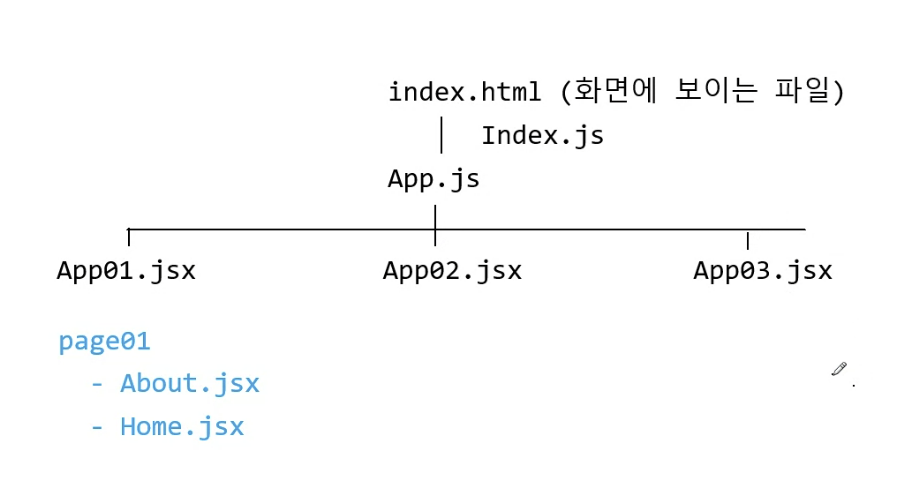
📄 page01 : 단순 BrowserRouter, Link 활용
import React from 'react';
import { BrowserRouter, Routes, Route, Link } from 'react-router-dom';
import Home from './page01/Home';
import About from './page01/About';
import Ceo from './page01/Ceo';
import Sub01 from './page01/Sub01';
import NotFiles from './page01/NotFiles';
const App01 = () => {
return (
<div>
<BrowserRouter>
<>
<nav>
<ul>
{/* <a href와 동일한 역할 Link / a 태그를 사용하면 로딩하느라 빙글빙글 계속 돈다. 따라서 a태그 대신에 Link 태그를 사용해야 한다. */}
<li><Link to='/'>Home</Link></li>
<li><Link to='/about'>About</Link></li>
<li><Link to='/ceo'>Ceo</Link></li>
<li><Link to='/sub01'>Sub01</Link></li>
<li><Link to='/*'>NotFiles</Link></li>
</ul>
</nav>
</>
{/* 화면에 보이는 영역 */}
<Routes>
<Route path='/' element={<Home />} /> {/* 주소가 '/'인 경우 Home */}
<Route path='/about' element={<About />} />
<Route path='/ceo' element={<Ceo />} />
<Route path='/sub01' element={<Sub01 />} />
<Route path='*' element={<NotFiles />} /> {/* 존재하지 않는 경로는 NotFiles로 */}
</Routes>
</BrowserRouter>
</div>
);
};
export default App01;
/* 사용자가 입력한 주소를 감지하는 역할을 하며, 여러 환경에서 동작할 수 있도록 여러 종류의
라우터 컴포넌트를 제공한다.
이중 가장 많이 사용하는 라우터 컴포넌트는 BrowserRouter와 HashRouter이다 */<BrowserRouter>를 통해 사용자가 입력한 주소를 감지한다.
예시 코드
- About
import React from 'react'; const About = () => { return ( <div> <h1>About Page</h1> </div> ); }; export default About; - Ceo
import React from 'react'; const Ceo = () => { return ( <div> <h1>Ceo Page</h1> </div> ); }; export default Ceo; - Home
import React from 'react'; const Home = () => { return ( <div> <h1>Home Page</h1> </div> ); }; export default Home; - NotFiles
import React from 'react'; const NotFiles = () => { return ( <div> <h1>NotFiles Page</h1> </div> ); }; export default NotFiles; - Sub01
import React from 'react'; const Sub01 = () => { return ( <div> <h1>Sub1 Page</h1> </div> ); }; export default Sub01;
📄 page02
- App02.jsx
const App02 = () => { return ( <BrowserRouter> <> <NavBar></NavBar> {/* 화면에 보이는 영역 */} <Routes> <Route path='/' element={<Home />} /> {/* 주소가 '/'인 경우 Home */} <Route path='/about' element={<About />} /> <Route path='/ceo' element={<Ceo />} /> <Route path='/sub01' element={<Sub01 />} /> <Route path='*' element={<NotFiles />} /> {/* 존재하지 않는 경로는 NotFiles로 */} </Routes> </> </BrowserRouter> ); }; - NavBar
import React, { useState } from 'react'; import data from './navData' import { Link } from 'react-router-dom'; const NavBar = () => { const [nav, isNav] = useState(false) const onToggle = ()=>{ isNav(!nav) } return ( <div className='navbar'> <p className='all-menu' onClick={onToggle}>menu</p> <nav className={`nav${nav?' on':''}`}> <ul> { data.map((item, index)=><li key={index}> <Link to={item.path} eletment>{item.title}</Link> </li>) } </ul> <p className='close' onClick={onToggle}>X</p> </nav> </div> ); }; export default NavBar; - navData
export default [ {title: 'HOME', path:'/'}, {title: 'ABOUT', path:'/about'}, {title: 'CEO', path:'/ceo'}, {title: 'SUB01', path:'/sub01'} ] - 해당 페이지로 이동하는 간단한 프로그램이다.
- 실행 결과
📄 page03 : /:변수명으로 넘기고 useParams()로 받기
- App03
const data = [ { title: 'html', info: 'HTML입니다' }, { title: 'css', info: 'CSS입니다' }, { title: 'javascript', info: 'JavaScript입니다' }, { title: 'react', info: 'React입니다' }, { title: 'vue', info: 'Vue입니다' } ]; const App03 = () => { return ( <BrowserRouter> <> <ul> <li><Link to='/'>Home</Link></li> <li><Link to='/about'>About</Link></li> <li><Link to='/profile'>Profile</Link></li> <li><Link to='/front/html'>HTML</Link></li> <li><Link to='/front/css'>CSS</Link></li> <li><Link to='/front/javascript'>JAVASCRIPT</Link></li> <li><Link to='/front/react'>REACT</Link></li> <li><Link to='/front/vue'>VUE</Link></li> </ul> </> <Routes> <Route path='/' element={<Home></Home>}></Route> <Route path='/about' element={<About></About>}></Route> <Route path='/profile' element={<Profile></Profile>}></Route> <Route path='/front/:name' element={<Front data={data}></Front>}></Route> {/* /front/:변수 -> 변수명은 아무거나로 잡음 */} </Routes> {/* 화면에 보이는 영역 */} </BrowserRouter> ); }; export default App03;- 여기서 보면 html부터 vue까지 앞에 /front 가 붙은 것을 알 수 있고, 앞에 front가 붙은 경로는
<Route path='/front/:name'이 코드를 통해 name과 JSON 객체 배열인 data가 Front.jsx로 넘어가는 것을 볼 수 있다. - 이때 밑의 사진과 같이 이름이
name으로 동일해야 하고, useParams()를 통해 받아올 수 있다.- : 뒤에 나오는 부분이 params의 key 부분이 되어 :name 는 name가 key가 되어 불러오고 있다.
- 여기서 보면 html부터 vue까지 앞에 /front 가 붙은 것을 알 수 있고, 앞에 front가 붙은 경로는
- Front.jsx
import React from 'react'; import { useParams } from 'react-router-dom'; const Front = ({data}) => { const {name} = useParams() return ( <div> <h1>Front Page</h1> <h2>{name}</h2> <hr></hr> { data.filter(item=>item.title===name) /* filter로 걸러낸 값을 */ .map((item, index)=><div key={index}> {/* map으로 돌림 => 메서드 체인 방식 */} <h2>제목 : {item.title}</h2> <h2>내용 : {item.info}</h2> </div>) } </div> ); }; export default Front;- 이제
const {name}은 useParams()으로 name을 받아와서 클릭한 html 또는 css 또는 javascript 또는 react 또는 vue가 된다. - filter를 통해
const data = [ { title: 'html', info: 'HTML입니다' }, { title: 'css', info: 'CSS입니다' }, { title: 'javascript', info: 'JavaScript입니다' }, { title: 'react', info: 'React입니다' }, { title: 'vue', info: 'Vue입니다' } ]; - 위의 name에 따라 해당 내용이 나오게 된다.
- 이제
- 실행 결과
개념 정리
- JSX(JavaScript XML)는 React 애플리케이션에서 사용되는 JavaScript의 확장 문법으로, UI를 표현하기 위한 도구이다.
- JSX를 사용하면 JavaScript 코드 내에서 HTML과 비슷한 구문을 사용하여 UI를 선언할 수 있다.
- .map() 메서드는 배열의 각 요소를 JSX로 변환하여 새로운 배열을 생성한다.
- .map() 메서드를 사용하여 데이터 배열을 JSX로 변환하고, 이를 React 컴포넌트에서 렌더링하면 화면에 원하는 결과를 표시할 수 있다.
- .filter() 메서드만 사용하면 원본 배열을 필터링하여 조건을 만족하는 요소들을 포함하는 새로운 배열을 반환하지만, 이 배열은 JSX로 렌더링할 준비가 되어있지 않다.
- JSX를 생성하려면 .map() 메서드나 다른 순회 메서드를 사용하여 각 요소를 JSX로 변환해주어야 한다.
- 따라서 원본 데이터를 필터링해서 새로운 배열을 만든다고 해서 그것만으로는 웹 페이지나 UI에 결과를 표시할 수 없다.
- JSX로 렌더링하려면 .map()이나 유사한 메서드를 사용하여 각 요소를 JSX로 변환해주어야 한다.
📄 page04
- App04.jsx
import React from 'react'; import Main from './page04/Main'; import { BrowserRouter, Routes, Route, Link } from 'react-router-dom'; import MemberDetail from './page04/MemberDetail'; const App04 = () => { return ( <BrowserRouter> <> <Routes> <Route path='/' element={<Main></Main>}></Route> <Route path='/member'> <Route path=':memberId' element={<MemberDetail></MemberDetail>} ></Route> {/* Route 안에 Route */} </Route> </Routes> </> </BrowserRouter> ); }; export default App04;- 기본 경로 ‘/’ 는 Main.jsx 컴포넌트를 불러온다.
- `/member/{memberId} 경로는 MemberDetail을 불러온다.
- Main.jsx
import React, { useEffect, useState } from 'react'; import axios from 'axios' import Member from './Member'; const Main = () => { const [list, setList] = useState([]) useEffect(()=>{ axios.get(`https://jsonplaceholder.typicode.com/users`) .then(res=>setList(res.data)) }, []) return ( <div> { <ul> <h2>회원 수 : {list.length}</h2> { /* list.map(item=><li key={item.id}>이름 : {item.name} 이메일 : {item.email}</li>) */ list.map(item=><Member key={item.id} item={item}></Member>) } </ul> } </div> ); }; export default Main;- json data를 axios로 불러워서 List에 저장한다. ⇒ 꼭 res.data 붙이기!
- item 마다 item을 Member에게 넘긴다(json 객체 하나씩 넘김)
- Member.jsx (1인분 컴포넌트)
import React from 'react'; import { Link, useNavigate } from 'react-router-dom'; const Member = ({item}) => { const {id, name, email} = item; const css = { border: '1px solid cyan', padding: '20px' } const navigate = useNavigate(); const onGo = () =>{ navigate(`/member/${id}`) } return ( <div style={css}> <p>아이디 : {id}</p> <h4>이름 : {name}</h4> <h4>이메일 : {email}</h4> <p><Link to={`/member/${id}`}>상세보기</Link></p> <button onClick={onGo}>상세보기</button> </div> ); }; export default Member;- 상세보기 클릭을 하면
/member/${id}경로를 호출하고, 이러면 앞의 App04에서 해당 코드의 경로를 탄다<Route path='/member'> <Route path=':memberId' element={<MemberDetail></MemberDetail>} ></Route> {/* Route 안에 Route */} </Route>
- 상세보기 클릭을 하면
- MemberDetail
import axios from 'axios'; import React, { useEffect, useState } from 'react'; import { useNavigate, useParams } from 'react-router-dom'; const MemberDetail = () => { const {memberId} = useParams() const[memberDto, setMemberDto] = useState({}) const {name, email, phone, website} = memberDto; const css = { border: '1px solid cyan', margin : 20, padding: '20px' } useEffect(()=>{ axios.get(`https://jsonplaceholder.typicode.com/users/${memberId}`) .then(res=>setMemberDto(res.data)) }, []) const navigate = useNavigate(); const goBack = ()=>{ navigate(-1); //navigate('/'); } return ( <div style={css}> <h3>MemberDetail Page : {memberId}</h3> <h4>이름 : {name}</h4> <ul> <li>이메일 : {email}</li> <li>핸드폰 : {phone}</li> <li>웹사이트 : {website}</li> <button onClick={goBack}>뒤로</button> </ul> </div> ); }; export default MemberDetail;
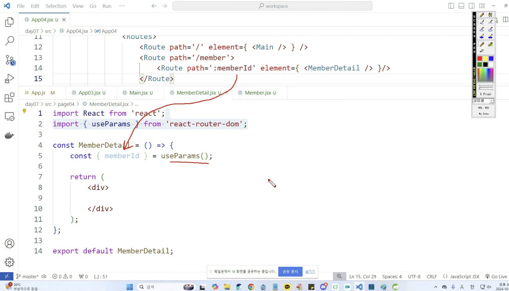
Spring & React 연결
- Front
import React, { useEffect, useState } from 'react';
import axios from 'axios';
const Login = () => {
const [str, setStr] = useState('')
useEffect(()=>{
axios.get('http://localhost:8080/SpringReactProject/login')
.then(res=>setStr(res.data))
},[])
return (
<div>
<h3>Login</h3>
<p>{str}</p>
</div>
);
};
export default Login;- Back
@Controller
@CrossOrigin
public class HomeController {
@RequestMapping(value = "/", method = RequestMethod.GET)
public String index() {
return "index";
}
@RequestMapping(value = "/login", method = RequestMethod.GET)
@ResponseBody
public String login() {
return "Hello Login!!";
}
}
- 실행결과
Redux
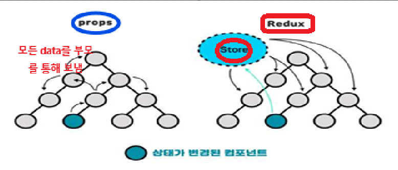
- props와 다르게 store 라고 해서 데이터를 따로 관리하는 상태 관리 라이브러리이다.
Redux 설치 & 설정
- yarn add react-redux ( npm install react-redux / npm i react-redux )
- yarn add redux ← 리덕스가 제대로 설치가 안 되면 또 한 번 한다.
- yarn add redux-devtools-extension ( npm i redux-devtools-extension )
- index.js
import { StrictMode } from 'react' import { createRoot } from 'react-dom/client' // import './index.css' import App from './App.jsx' // ------------내가 추가한 import------------------------- import {Provider} from 'react-redux'; import rootReducer from './store'; // import {createStore} from 'redux'; -> createStore는 depricated 됐다. import { legacy_createStore as createStore} from 'redux'; import {composeWithDevTools} from 'redux-devtools-extension' //const store = createStore(rootReducer) const store = createStore(rootReducer, composeWithDevTools) // ------------------------------------- createRoot(document.getElementById('root')).render( <StrictMode> <Provider store={store}> {/* data를 공급하겠다. */} <App /> {/* App의 후손까지 모두 store를 사용해도 된다. */} </Provider> </StrictMode>, )
Redux 실습
📄 Day08
Color.jsx
- Redux에서 사용하는 action가 reducer를 정의
- color.jsx
/* 1. 액션 생성 */ // 모듈 이름을 앞에 붙여주어서 액션명 중복 방지 const RED = 'color/RED'; const GREEN = 'color/GREEN'; const BLUE = 'color/BLUE'; const MAGENTA = 'color/MAGENTA'; /* 2. 액션 전송 */ export const red= () => ({ type: RED }) export const green = () => ({ type: GREEN }) export const blue = () => ({ type: BLUE }) export const magenta = () => ({ type: MAGENTA }) /* 3. 초기값 설정 */ const initialState = {color: 'hotpink'} /* 4. 리듀서 생성 - state와 action 파라메터를 참조하여, 새로운 상태 객체를 만든다. */ // state - 현재 상태, action - 액션 객체 // 반드시 state에는 초기값을 주어야 한다. const reducer = (state=initialState, action) =>{ switch(action.type){ case RED: return {color: 'red'} case GREEN: return {color: 'green'} case BLUE: return {color: 'blue'} case MAGENTA: return {color: 'magenta'} default: return state } } /* 5. export */ export default reducer // 컴포넌트가 아니라 순수 js 파일 - index.js에서는 reducer들을 combine시키는 역할이다
// modules의 color.jsx와 components의 Color.jsx를 연결시켜주는 역할 import { combineReducers } from "redux"; // 리듀서끼리 연결해주는 역할 import color from './modules/color.jsx' export default combineReducers({ // 이름(아무거나 쓰면 됨 -> 대부분 리듀서랑 똑같은 이름으로 씀) : 리듀서 이름 color : color, count: count, animal, // 이름과 리듀서 이름을 동일시 하면 그냥 하나만 써도 됨. coffee }) - Color.jsx
import React from 'react'; import { useDispatch, useSelector } from 'react-redux'; import { red, green, blue, magenta } from '../store/modules/color' const Color = () => { const color = useSelector(state => state.color.color); const dispatch = useDispatch(); const count = useSelector(state => state.count.count); return ( <div> <h1 style={{ color: color }}>컬러 : {color}, 카운트 :{count}</h1> <p> <button onClick={() => dispatch(red())}>Red</button> <button onClick={() => dispatch(green())}>Green</button> <button onClick={() => dispatch(blue())}>Blue</button> <button onClick={() => dispatch(magenta())}>Magenta</button> </p> </div> ); }; export default Color;- store에 있는 정보들을 불러옴
useSelector와useDispatch를 통해 store 정보를 불러옴useSelector: Redux Store의 특정 상태 값을 가져오는 역할을 한다.useDispatch: Redux Store에 액션을 전달해 상태를 변경해주는 함수
- store에 있는 정보들을 불러옴
Coffee.jsx
- index.js : reducer 합침
// modules의 color.jsx와 components의 Color.jsx를 연결시켜주는 역할
import { combineReducers } from "redux"; // 리듀서끼리 연결해주는 역할
import color from './modules/color.jsx'
import count from './modules/count.jsx'
import animal from './modules/animal.jsx'
import coffee from './modules/coffee.jsx'
export default combineReducers({
// 이름(아무거나 쓰면 됨 -> 대부분 리듀서랑 똑같은 이름으로 씀) : 리듀서 이름
color : color,
count: count,
animal,
coffee
})
- CoffeeResult.jsx
Context
- context를 이용하면 단계마다 일일이 props를 넘겨주지 않고도 컴포넌트 트리 전체에 데이터를 제공할 수 있다.
- context는 React 컴포넌트 트리 안에서 전역적(global)이라고 볼 수 있는 데이터를 공유할 수 있도록 고안된 방법이다. 그러한 데이터로는 현재 로그인한 유저, 테마, 선호하는 언어 등이 있다.
- React 애플리케이션에서 데이터는 props를 통해서 부모에서 자식에게 전달되지만, 애플리케이션 안의 여러 컴포넌트들에게 props를 전달해줘야 하는 경우 context를 이용하면 명시적으로 props를 넘겨주지 않아도 값을 공유할 수 있게 해주는 것이다
⇒ 데이터가 필요할 때마다 props를 통해 전달할 필요가 없이 context를 이용해 공유한다.
- context API를 사용하기 위해서는 Provider, Consumer, createContext가 필요하다
- createContext : context 객체를 생성한다.
- createContext 함수 호출 시 Provider와 Consumer 컴포넌트 반환한다.
- initialValue는 Provider를 사용하지 않았을 때 적용될 초기값을 의미한다.
- Provider : 생성한 context를 하위 컴포넌트에게 전달하는 역할을 한다.
- Consumer : context의 변화를 감시하는 컴포넌트이다.
- 설정한 상태를 불러올 때 사용한다
- createContext : context 객체를 생성한다.
설치
- npm install react-router-dom / yarn add react-router-dom
- npm install axios / yarn add axios
useContext
- useContext 를 사용하면 기존의 Context 사용 방식보다 더 쉽고 간단하게 Context를 사용이 가능하고, 앞서 다뤘던 useState, useEffect와 조합해서 사용하기 쉽다는 장점이 있다.
- useContext를 사용할 때 주의해야 할 점은 Provider에서 제공한 value가 달라진다면 useContext를 사용하고 있는 모든 컴포넌트가 리렌더링 된다는 점이다. 따라서 useContext를 사용할 때 value 부분을 메모제이션 하는데 신경을 써야한다.
Context 실습
📄 day09
- App.js
function App() { return ( <div> {/* Context를 사용할 컴포넌트의 상위 컴포넌트에서 Provider로 감싸줘야 한다. Provider의 모든 하위 컴포넌트가 얼마나 깊이 위치해 있는지 상관없이 Context의 데이터를 읽을 수 있다. */} <CountProvider> <Count></Count> </CountProvider> </div> ) } export default App - CountContext.jsx
import React from 'react'; import { useState } from 'react'; import { createContext } from 'react'; export const CountContext = createContext() const CountProvider = (props) => { // state, 함수 등 모든 처리 const [count, setCount] = useState(0); // Provider에는 value라는 props가 있으며, 이것이 데이터를 하위 컴포넌트에게 전달한다. const increment = () =>{ setCount(count+1) } const decrement = () =>{ setCount(count-1) } return ( <CountContext.Provider value={{count, increment, decrement}}> {/* children은 부모 컴포넌트에서 자식 엘레먼트나 컴포넌트를 포함할 때 자동으로 전달된다. */} {props.children} </CountContext.Provider> ); }; export default CountProvider; - Count.jsx
import React from 'react'; import { CountContext } from '../contexts/CountContext' import { useContext } from 'react'; const Count = () => { /* return ( <CountContext.Consumer> { ({ count, increment, decrement }) => ( <div> <h1>카운트 : {count}</h1> <p> <button onClick={() => increment()}>증가</button> <button onClick={() => decrement()}>감소</button> </p> </div> ) } </CountContext.Consumer> ); */ // ----------------<CountContext.Consumer>를 쓰니깐 코드가 복잡해져서, useContext로 바꾼다. ------------------ const { count, increment, decrement } = useContext(CountContext); // CountContext로부터 { count, increment, decrement } 의 데이터를 받겠다. return ( <div> <h1>카운트 : {count}</h1> <p> <button onClick={() => increment()}>증가</button> <button onClick={() => decrement()}>감소</button> </p> </div> ) }; export default Count;